5 Experiment 1: Relation of first-order and position motion sensitivity to element
spacing.
The movies shown in Section 2 seem to suggest that the perceived change in motion is a function
not only of the properties of individual elements but of a spacing-dependent interaction between
nearby elements. In this experiment I measured hoe the sensitivity to carrier and envelope motion
changed as a function of the distance between elements.
5.1 Methods
Stimuli for this experiment consisted of a circle of evenly spaced elements presented at an
eccentricity of 6.7∘. As described above in § 3.5, I used an interleaved staircase procedure, with the
staircase varying the speed of the envelope motion. Each staircase used a fixed carrier strength and
spacing. The first training session used four values for spacing and two for carrier strength; I used
data from this session to select values of spacing and carrier strength that were likely to
provide good information about the effects of each variable. Subsequent sessions were
in two types. One focused on the effect of spacing, and tested several spacings at a
single chosen carrier strength. The other focused on the effect of carrier strength, and
tested a fixed set of carrier strengths (0.1, 0.2, 0.4 and 1.0), at two chosen values of
spacing. It is possible that observers adapted to the set of stimuli when a single carrier
strength or limited sets of spacings was used for an entire session. However, I found that a
single model fits all types of sessions adequately, so all data is pooled and presented
together.
5.2 Results
I first show individual psychometric functions that illustrate the effects of spacing, carrier
strength and envelope displacement. I found three effects relating envelope motion, carrier
motion, and spacing. I will describe and show these effects qualitatively first, then show
how they are accounted for by the model described in Section 4 and quantify these
effects.
5.2.1 Sensitivity to envelope displacement decreases as spacing decreases
First consider the effect of reducing spacing (and simultaneously increasing number) on the
perception of envelope motion. There are two potential effects. A reduction in spacing may cause
crowding, while an increased number of identical elements may allow summation or pooling of their
identical envelope motions. These hypotheses would predict opposite effects on the sensitivity to
envelope motion. Pooling would predict that more elements would lead to a greater sensitivity to
envelope motion; crowding would predict that reduced spacing will reduce sensitivity to envelope
motion. I found the latter; an example of this is shown in Figure 5.1, for a subset of
the data collected. This figure plots the envelope displacement per step, Δx, on the
horizontal axis and the probability of the observer responding “clockwise” to that stimulus
on the vertical axis. For Figure 5.1 data for two values of spacing at the same carrier
strength are shown, for three observers. In each case the psychometric function fit to data
collected at the smaller spacing has a shallower slope, independently of any shifts it may
have. Below in § 5.4.3 I will quantify and graph the relation of sensitivity to element
spacing.
Even if crowding causes interference at smaller spacings, there might still be pooling of envelope
motion between widely spaced elements. Therefore I tested whether there was a change in envelope
motion sensitivity with element number at wider spacings, outside the range of spacings that might
be subject to crowding, but I found no significant effect (§ 5.4.2). The values of Δx tested are
smaller than half the inter-element spacing of the smallest spacings used, so that spatial aliasing
(the wagon wheel illusion) should not explain why there is additional uncertainty in motion
direction.
5.2.2 Sensitivity to carrier strength increases as spacing increases; carrier motion is repulsive
in sparse displays
Contrary to the results for envelope motion, the more elements on screen, the more effect carrier
motion had on the appearance. That is, when there were few elements on screen, the effect of
changing carrier motion strength was small; when there were more elements on screen, changes in
carrier motion had more effect on motion appearance (Figure 5.2). This was complicated by a
repulsive effect; when few elements were used on screen, carrier motion in one direction often
caused observers to shift their reports of perceived motion in the opposite direction. Thus
the response to carrier motion was nonmonotonic; adding elements to a blank display
caused observers to report directions of motion opposite that of the carrier, but adding
more closely-spaced elements caused apparent motion to shift in the direction of carrier
motion. Figure 5.2 gives examples of both these effects, again using a subset of the data
collected. This figure shows data using two different values of carrier strength, each at two
different element spacings. The lower row shows data collected at the wider of the two
spacings.
When more elements were added to the display, the sensitivity to carrier motion increased,
indicating summation of carrier motion. The sensitivity to carrier motion corresponds to the
change in responses associated with an increment of carrier strength. Figure 5.2 shows this
measurement for an increment from carrier strength of 0.1 to 0.2, for sparse (5 elements)
and dense (20 elements) displays. The sensitivity to carrier motion corresponds to the
vertical shift in the y-intercept of the psychometric function, illustrated as black arrows in
Figure 5.2.
Note that sensitivity being discussed is based on the shift in the y-intercept rather than a shift
in the point of subjective equality (where the psychometric function intercepts p = 0.5.) The
change in PSE corresponds to the sensitivity divided by the slope of the psychometric function.
Therefore a change in slope without a change in sensitivity would still lead to a change in PSE.
However, since the change in the y-axis intercept changes with spacing, there is an
effect of element number on carrier motion as well as an effect of spacing on envelope
motion. Both effects contribute to the change of appearance seen in Section 2. As more
elements are added to the display and packed closer together, the appearance is less
determined by the envelope motion, while it is more determined by the carrier motion. The
combination of both effects mean that carrier motion determines the appearance when the
display is dense and envelope motion determines the appearance when the display is
sparse.
Note that when fewer elements are displayed, incrementing carrier motion tends to bias the
appearance in the opposite direction from the carrier motion. In other words carrier motion is
repulsive in sparse displays. In the left column of Figure 5.2, the psychometric functions
fitted to this data intercept the vertical axis at values of Pr 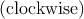 less than 0.5;
furthermore, increasing the carrier strength from 0.1 to 0.2 increases the repulsion.
So at wide spacings, observers were more likely to perceive a stimulus with stationary
envelopes and clockwise carrier motion as actually moving counterclockwise. When more
elements were added to the display, repulsion turned to assimilation; the same increment to
carrier motion shifted the appearance of the stimulus in agreement with the motion
added.
This repulsion means that there are some stimuli for which both envelope and carrier motion
are slightly clockwise, but the perceived motion is still counterclockwise; this is the case when the
curves pass through the lower right quadrants in Figure 5.2 (Δx > 0 and Pr < 0.5.) In these
conditions the observer will respond “counterclockwise” to a stimulus whose carrier and envelope
motions are both slightly clockwise.
Figure 5.2 presents folded data, i.e., values shown here with a single value for carrier strength,
which I nonetheless refer to as “clockwise,” represent data collected from both that stimulus and its
mirror image, and envelope motions and responses are mirrored correspondingly. So a point
appearing below P < 0.5 in this graph can be read as indicating that the observer chose
“counterclockwise” to a particular stimulus more often than they chose “counterclockwise” to that
stimulus’s mirror image. Thus the presentation of folded data here averages out any static biases
toward one direction.
In the previous section I illustrated that the sensitivity to envelope motion, visible as the
slope of the psychometric function, decreased when element spacing decreased. In this
section I illustrated that carrier motion has the opposite change in sensitivity; carrier
motion has a stronger influence on perceived motion for narrowly spaced stimuli. In this
experiment the spacing between elements covaries with the number of elements, so that it is
indeterminate whether either effect should be considered an effect of the reduced spacing or of
the increased number (this will be explored in Section 6. However, in either case, this
contrast identifies a way in which position-defined motion is processed differently from
first-order motion; it appears that envelope motion signals from separate objects are
not pooled in this task, while carrier motion does appear to pool between adjacent
objects.
5.3 Model and data visualizations
Having given examples illustrating some of the effects that a model should capture, this section
attempts to present an overview both of the entire dataset, and how the model specified in
Section 4 fits that data. In the subsequent section I will examine particular features of the model
and evaluate their fit to the data.
This experiment related three parameters – carrier strength, envelope motion and spacing – to
a fourth variable, the motion perceived by the observer. One can visualize those variables as
forming a three-dimensional space illustrated in Figure 5.3. The combination of these three
variables determines the likelihood with which the observer will respond “clockwise”
or “counterclockwise” to the given stimulus. The model’s prediction of the proportion
of responses clockwise visualized as a density coloring each point in the space. Four
planar sections are shown through this space to highlight model features of interest. In
Figure 5.4 these same planar sections are pulled out and shown in relation to the observed
data.
5.3.1 Model figure construction
Figure 5.3 and Figure 5.4 show data from one observer; the complete set of illustrations for all
observers is shown in an appendix. The background color scale depicts the probability of
responding “clockwise”, with high probabilities shaded red and low probabilities (i.e. tending
counterclockwise) shaded blue; probabilities further from 0.5 in either direction are shown with
darker and more saturated colors. The four subplots correspond to the four planes shown in
Figure 5.3.
The colored background in Figure 5.4 shows the model’s predictions as a function of two of the
three variables, leaving the other fixed; the value of the fixed variable is noted in the upper right
corner of each panel. The four panels show how model responses vary (UPPER LEFT) as a
function of spacing and carrier strength, for stimuli with zero envelope motion, (LOWER
LEFT) as a function of spacing and envelope movement, for stimuli with zero carrier
strength, (UPPER RIGHT) as a function of envelope motion and carrier strength, for stimuli
with a fixed, wide spacing, and (LOWER RIGHT) as a function of envelope motion and
carrier strength (same slice direction as UPPER RIGHT), for stimuli with a fixed, narrow
spacing.
Figure 5.4 also represents the observer’s responses. Trials are sorted into bins according to
stimulus parameters and a summary circle is plotted for each bin. The circles are drawn with area
proportional to the number of trials they summarize. The shade within the circle is a weighted
average of the observer’s responses, as explained below. Any difference between the shading inside
the circle and that of the background indicates a residual between the model and the
subset of observed data summarized in that circle. Each plot uses a different binning,
according to its axes. For example, a circle in the lower left figure summarizes a set of
trials with a particular range of envelope motion and spacing, but any value of carrier
strength.
5.3.2 Binning and color scaling
This section gives technical details of how responses are binned and averaged for display in
Figure 5.4. The shading within each circle is not simply the arithmetic mean of observers’
responses, but is based on the difference between the data and model predictions. I based the plot
on the residuals rather than the sample mean for reasons related to the three dimensional
parameter space and the sampling of data throughout that space. First, each circle represents the
subset of trials that lie closest to it in the two dimensions of the plot, but these trials may be
located at any value in the third dimension. For example, in the UPPER LEFT panel,
showing a slice across carrier strength and spacing, data are combined across all speeds
of envelope motion. The response probability varies in the unseen dimension, so that
one circle may combine stimuli for which the observer tends to respond clockwise with
stimuli for which the observer tends to respond counterclockwise. Since I used a staircase
procedure to choose envelope displacement, the the mean response probability in each
bin clusters around 0.5, which would not be useful to display. Since the data are not
uniformly sampled throughout the stimulus configuration space, adjacent bins collect
trials with a different sampling in the unseen dimension, as determined by the staircase
procedure. A simple arithmetic mean of each bin would not lead to a depiction of observed
data that could be visually compared with either adjacent bins or the model on the 2-d
slice.
Instead the shading within each circle is determined by computing the Pearson residual
between model predictions and observations, then applying that residual at the location of the bin
center to obtain a remapped response probability. Consider n trials, whose parameters are xi, and
binary responses yi ∈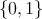, falling within a bin centered on a mean stimulus x. Recall that the
Pearson residual for a set of n binary observations yi and corresponding predicted probabilities 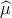 i
is defined as
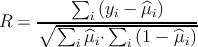
which is the total difference between data and observation, scaled by the standard deviation of the
predicted count (the predicted count being the sum over each Bernoulli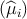 random variable.) If
the model is a function of the stimulus parameters x so that i = 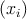, I define a remapped
response probability y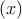 in terms of the Pearson residual,
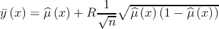
The shading of the circles in Figure 5.4 is chosen according to y(x), while the background is
colored according to (x). This is designed so that the difference between background
and observation drawn on the graph fairly depicts the difference between model fit and
data: if the Pearson residual is zero for a bin of trials, then y = ; if all the trial
parameters coincide with the bin center so that all xi = x, y collapses to the sample mean
y = 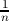 ∑
iyi; and for a given set of random observations yi, y - is proportional to
R.
Figure 5.4 does not include a measure of standard error or significance. Below in
§ 6.2.1 I will consider model predictions and data one variable at a time, at which point I
can display standard errors of observed and predicted data and obtain goodness of fit
statistics. However, the areas of the plotted circles in Figure 5.4 are scaled to the number of
observations, so that the error in each average corresponds inversely to the size of each circle; it
is expected that smaller circles will have larger differences between observation and
model.
5.3.3 Phenomena captured in the model
The four plots in Figure 5.4 illustrate effects associated with carrier strength, envelope motion,
and spacing. The lower left panel shows how the observer’s response varies for stimuli with no
carrier motion (i.e. with all elements flickering in counterphase.) The horizontal axis measures the
degree of carrier motion used in the stimulus, while the vertical axis measures the inter-element
spacing. When there is no carrier motion, observers tend to report clockwise apparent motion for
envelope motions that are clockwise, and vice versa. This is reflected by the right half of the graph
taking values greater than 0.5 (in red) and the left half of the graph taking values less than 0.5 (in
blue.)
The effect captured in the lower left panel is how the sensitivity to envelope displacement
(which corresponds to the inverse of the horizontal distance between contour lines) changes as a
function of spacing. In the model the spacing-dependent sensitivity is described by the function
MΔ(S) and is controlled by the sensitivity parameter β0 and the “critical spacing” parameter SC.
The sensitivity to envelope motion decreases at smaller spacing, causing contour lines to spread
apart at the bottom of the graph. The data that is observed, whose residuals are plotted in circles,
shows analogous behavior. Note that at smaller spacings, data has been collected over a wider
range of envelope speeds than at the larger spacings. This is a result of using a staircase
procedure which steps over a wider range when the sensitivity is lower. Even at the smallest
spacings most data has been collected with envelope step sizes significantly smaller than
half the spacing, so that the ambiguity of forming correspondences between element
appearances (i.e. the wagon wheel illusion) should not contribute to the lessening of
sensitivity.
The upper right panel of Figure 5.4 characterizes responses to envelope and carrier motion at a
wide spacing. Consider starting at the point (0,0), where the response probability is 0.5.
Traveling up the graph, corresponds to adding carrier motion to the stimulus; response
probabilities at first drop below 0.5, exhibiting repulsion. Increasing the carrier motion
further, the repulsion reverses and the observer now reports motion in the direction of
the carrier. At any point, moving horizontally corresponds to a change in the envelope
motion; at the large spacing captured in this graph, sensitivity to envelope motion is
high.
The lower right panel has the same axes as the upper right but shows narrow spacings. Moving
vertically in this graph gives a large change in response, reflecting a higher sensitivity to carrier
motion than in the upper right panel. By comparison, moving horizontally shows much less
sensitivity to envelope motion than in the upper right panel. The repulsion effect MI that
was evident in the upper graph is swamped by the higher sensitivity to carrier motion
MS.
Finally, the upper left panel shows the combined effects of both the nonlinear repulsion and
spacing-dependent summation effects. Here the envelope motion is fixed to zero. At relatively wide
spacings, moderate carrier strengths induce repulsion, indicated by mostly blue colors on the right
side of the panel. Carrier strengths less than 0.4 generally cause repulsion but as the carrier
strength approaches 1 again, carrier motion once again becomes positive in strength. The
repulsion effect also disappears at narrower spacings. Both the repulsion at weak carrier
strengths and its reversal at at high carrier strengths occurred for most observers in the
dataset.
The repulsion effect MI is modeled as a function only of the carrier strength; it is independent
of both the number of elements on the display and the spacing between them. I explored changing
or adding similarly formulated terms that were dependent on element number and on spacing, but
these did not result in better fits as assessed by the AIC measure (Akaike, 1974) That is
to say, the same strength of repulsion appears to exist for spare displays as for dense
displays; when very dense, repulsion is usually overwhelmed by the summation (MS)
term.
While sensitivity to envelope motion decreases when spacing is reduced, the sensitivity to
carrier motion typically increases. The combination of the two effects can be seen in comparing the
upper right and lower right panels of Figure 5.4. When spacing is relatively wide, as in the upper
right panel, the gradient of the decision function is steeper along the axis of envelope motion, and
the model is relatively insensitive to carrier strength. In the lower left graph, showing data at
narrow spacings, the situation has reversed. Broadly speaking it appears that motion is
driven by envelope motion at wider spacings but by the carrier motion when spacing is
narrow.
Similar patterns of behavior are found for most observers. The set of plots for all observers who
participated in this experiment is included in Section 8.
It is worth noting the areas where the model is not fully successful at reproducing observers’
data. Often the repulsion measured at a carrier strength of 0.2 is stronger than the model fit, and
the repulsion at 0.4 is weaker (see Figure 5.7 below.) This suggests that the functional form I have
chosen for MI(C) might need to be improved, however the current data do not have the power
that would select a better principled parameterization.
Another area where the model does not fully capture the observers’ behavior is that their
responses at smaller spacing are more variable than the model would predict. This is visible to
some extent in the raw data plotted in Figure 5.1; the data collected at wider spacings trace out a
psychometric function, but the data collected at narrower spacings have more dispersion than one
would expect from the model fit. This is also visible in the bottom row of circles in the lower left
panel of Figure 5.4, where the differences between model and observed data are more
apparent.
5.4 Model components, effect sizes, and goodness of fit
This model captures the effect of three factors - carrier strength, envelope motion and
spacing - that each affect apparent motion. The model is phrased in terms of three effects:
summation of carrier motion, crowding of envelope motion, and repulsion driven by carrier
motion strength. This model potentially allows for variation in the appearance of these
stimuli between observers. I have shown that it fits qualitatively, in so far as its fit
appears to capture some of the variation in observed responses. But to justify each
choice made in modeling the data I should try to justify the inclusion of each effect, by
showing that including each effect produces a model that better captures each observers’
data.
There is inter-subject variability; identical stimuli produce different appearances of motion in
different observers. The model I have proposes that this variability is due to different proportions
the same underlying effects. To check this, I will evaluate each effect separately and discuss how
they apply to each observer. One of my goals is to show that despite this variability, the same
qualitative effects appear in each observer; that is, effects should be present in each observer,
though they may vary in proportion.
In the following sections I attempt to check the model’s performance in describing behavior
with reference to the three proposed effects. This will help evaluate and provide some
justification for each component of the model, and will also show whether each effect
is consistent across observers. The goal is to justify the inclusion of each of the three
effects, and by looking at each effect to show that it whether it is consistent across each
observer.
5.4.1 Statistical considerations for binary psychophysical data
Tests of goodness of fit such as residual deviance and Pearson χ2 operate by comparing the
predictions of the proposed model to those of a saturated model, one with as many parameters
as observations, that captures all the variance, as well as to a null model, which only
includes an intercept. However the idea of a saturated model does not have a perfect
equivalent in the case of binary responses; since an observer will respond both “yes” and
“no” to the same stimulus, one cannot capture all the variance, and for cases where the
observer always gives the same answer, this leads to undefined likelihood values. Standard
goodness-of-fit checks are also problematic when the sampling is not evenly grouped over the
predictors (Collett, 2003), or when the observations sparsely sample the space spanned
by multiple predictors (Hosmer et al., 2013). Both of these situations apply to this
dataset.
Rather than an overall goodness of fit test, I wish to evaluate each effect separately. Applying
an overall goodness of fit test to a model with multiple effects involving multiple predictors would
not give a useful evaluation of how well each component effect is capturing behavior. To examine
each effect I would like diagnostic model checks that focus on each effect in turn, that is, partial
goodness of fit checks for each effect. Since I sampled a discrete set of spacings and of carrier
strength, this can be done by expanding the proposed model mP into model mS,E that is saturated
over one predictor E; while the proposed model fits carrier sensitivity as a function of spacing
(say,) the saturated model would fit a separate value of sensitivity at each spacing.
This makes a “effect saturated” model mS,E; refitting the model without the proposed
effect builds a null or intercept model m0,E. Then the success of each effect term can
be characterized by nested comparisons between null, proposed (mP ) and saturated
models (Tsiatis, 1980; Archer et al., 2007), and by the log-likelihood-based pseudo-R2
measure
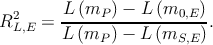
The RL,E2 statistic can be interpreted as the proportion of available likelihood that is captured
by the proposed model, relative to a null model. Building effect-saturated models will allow for
visual comparison of the saturated model to the proposed models.
5.4.2 Lack of pooling of envelope motion across large distances
I motivated the description of the model proposed in Section 4 by considering that the observer
attends a single element of the display; other elements are not attended, may but exert an
influence via crowding or summation. However, in our task the stimulus is composed of identical,
identically moving elements. Therefore in principle, it is not necessary that an observer isolate
any particular element to measure envelope motion; any element or combination of
elements will do the job. When distinct objects move concurrently, one can perceive
the motion as being of a larger element of which the distinct components are features,
such as in Ternus displays (Boi et al., 2009) or as being components of a larger rigid
body (Anstis and Kim, 2011). In the present stimuli, both envelope and carrier motion
are, considered separately, consistent with that of a wheel rotating around the fixation
point. Knowing this, an observer might pool multiple envelope position signals in order
to improve sensitivity to envelope motion. If that is the case, then the sensitivity to
envelope motion (i.e. the slope of the psychometric function relating envelope motion
to response probability) should increase when additional, coherently-moving elements
are added to the display, as long as targets remain widely separated enough to avoid
crowding.
For 9 of the observers who participated in this experiment, I collected data with both 2 and 4
elements on the display (at an eccentricity of 6.67∘, corresponding to spacings of 20.9∘ and 10.5∘
around the circle.) These spacings should be large enough to escape crowding effects. To assess the
presence or absence of pooling at large distances I compared observers’ sensitivities to
envelope displacement at 2 and 4 elements using a logistic regression model formulated
as
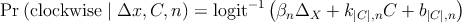
where the slope of the psychometric function corresponds to βn and separate proportionality
constants k and b were used for each absolute value of direction content and element number.
Using a treatment contrast for βn, I asked how sensitivities changed as a function of element
number. For 6 of the observers, the sensitivity coefficient decreased at 4 elements as compared to 2;
for the remaining 3 it increased. However, any change only reached a significance level of p < 0.05
for only one observer (whose sensitivity decreased as element number changed from 2
to 4.) The subset of data considered here comprises 5561 trials. I conclude that there
is not pooling of envelope motion data between separate objects in this experiment,
which agrees with the choice of a form of βΔ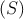 which reaches an asymptote at large
spacings.
5.4.3 At narrow element spacings, sensitivity to envelope motion declines.
A central feature of the proposed model as illustrated in Figure 4.1 is that it expects the
sensitivity to envelope motion to decline as spacing between elements declines, i.e. there is a
crowding effect on the detection of envelope motion. As described above, to assess whether the
model captures an the effect of spacing on sensitivity in the presence of other effects, I compare
this model to a null model without this effect and a saturated model formed by expanding the
parameterization of βΔ into a set of dummy variables coded to capture a different value
βΔ,S for each distinct value of spacing tested. The null model uses a constant value
of sensitivity at all spacings. All other aspects of the model are left as described in
Section 4.
The proposed and saturated models are plotted in Figure 5.5 for three observers (the entire set
is shown in Figure 8.23.) The measurement obtained in the saturated model is noisy,
but the sensitivities do approach zero as spacing approaches zero. Also confirming the
analysis in § 5.4.2, as spacings become large, sensitivity appears to reach an asymptote. So
both general features chosen for the functional form of βΔ, an asymptote at large
spacings, and a collapse to zero at small spacings, are consistent with the data. Comparing
the proposed to the null model, all observers show highly significant improvements,
with the largest p-value being 10-5. Further comparing the proposed to the saturated
model, 3 out of 11 observers show a significant difference between proposed and saturated
model.
Labels in each facet of the plot show the pseudo-RL2 measure described above. Aggregating
across all observers, I obtain a value of RL2 = 0.58. Note that for observer PBM (the author) the
sensitivities are much larger than for other observers, while still showing the same form of collapse
at narrow spacings. The higher sensitivity might be attributed to overtraining relative to the naïve
observers.
5.4.4 When more elements are added, carrier motion summates.
While the sensitivity to envelope motion decreases as flanking elements are brought closer, the
sensitivity to carrier motion increases as more elements are added. I assessed this effect using the
same technique as before, forming a saturated model by dropping the term Ms and including
variables βSC for each distinct value of spacing. The saturated model drops the linear repulsion
term βIaC (as it is proportional to carrier strength and thus linearly dependent with the
indicator terms.) The other components of the model remain, including the nonlinear
component of repulsion βIbC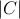. The intercept model retains the term βIaC (i.e. it has a
constant sensitivity to carrier motion that does not vary with the number of elements.) For
data at a few spacings tested at a carrier strength of 1, there are some all-clockwise
or all-counterclockwise responses, which leads to undefined likelihoods for those data
in the saturated model; those data are disregarded for purposes of model comparison
(Collett, 2003).
The comparison of proposed and saturated models is shown in Figure 5.6. The units βS are
interpretable as the change in log-odds of responding “clockwise” in proportion to a small change in
the carrier strength. Likelihood ratio tests show significant improvements from null to proposed
models for all observers, with the largest p-value being p < 10-4 for observer NS. 10 of 11 observers
also showed significant differences between proposed and saturated models. In aggregate,
the proposed model is successful, obtaining RL2 = 0.7874 with reference to null and
saturated models. For several observers the proposed linear relation between number of
elements and carrier sensitivity captures the response very well, obtaining RL2 > 0.9 for
3 observers. However, some observers are not as well fit (Figure 8.24.) Note that for
some observers such as JB and MC the measurement of carrier sensitivity does not
find assimilation even at the smallest spacings; small increments of carrier motion are
repulsive for these observers even when the display is dense with elements. However
the sensitivity measure here does not include the nonlinear repulsion term βIbC
which can make increments of carrier motion assimilative for larger values of carrier
motion.
5.4.5 Weak carrier motion repels direction judgments.
Note that the carrier sensitivity measured in the previous section, in addition to the inverse
proportionality to spacing, has a constant generally negative offset. I have referred to this offset as
“repulsion,” since negative values of carrier sensitivity means that increments in carrier
strength bias the observer’s judgements in the opposite direction. Thus, in Figure 5.6
carrier sensitivity does not approach zero for sparse displays, but some usually negative
value. Carrier motion generally become assimilative when there are more, closely packed
elements in the display. The first is that the strength of repulsion seems to be determined
by the carrier strength of an individual element, rather a sum over nearby elements.
That is, after accounting for summation, which as we saw in § 5.4.4 can be well fit by
a term proportional to the number of elements, there is a remainder that appears to
be independent of the number of elements or their spacings. This repulsion effect is
independent of element spacing, while the spacing-dependent component of carrier strength
is directly proportional to the number of elements; this might indicate some element
of carrier motion processing that is independent of the number of elements or their
spacing.
5.4.6 Repulsion is nonlinear in carrier strength.
At carrier strengths approaching 1, the repulsion effect can weaken and even reverse. This effect is
visible in the upper left panel of Figure 5.4, where moderate values of carrier strength at wider
spacings are repulsive (blue shades) but become assimilative (red shades) as carrier
strength is further increased. That corresponds to a situation in which, starting with
a display with no envelope or carrier motion, a little clockwise carrier is added and
the display appears to go counterclockwise, but adding more changes the appearance
to clockwise. The summation effect contributes to this, but is not strong enough for
sparse displays to account for the reversal of apparent motion. There are two notable
characteristics of this repulsion. The first is that the degree of repulsion appears to be a
nonlinear function of direction content. This repulsion is captured in the model in the
function MI(C). This can be understood as a component of the observer’s response
that is a function of the carrier strength but is independent of the element spacing or
number.
Similarly to previous sections, I analyze the presence of this nonlinearity by comparing nested
models. The null model has no effect of carrier motion, i.e. MI = 0, but is otherwise identical to
the full model described above in Section 4. The second model is one in which the repulsion is
linearly related to the carrier strength of the stimulus; MI = βIC. For the linear model, 9 out of 11
observers showed a significant (p < 0.05) improvement over the null model. However, the linear
model does not capture the observation that while weak carrier strengths repel motion direction
judgements, stronger carrier strengths do not. The proposed model adds a a second-order,
odd-symmetric component to repulsion signal; MI = βIaC + βIbC. As compared to the
linear model, I found that for all 11 observers, the fit was significantly improved by
adding the second-order component, the largest p-value being p = 2.4 × 10-7 for observer
CJ.
Additionally, while the signs of βI in the linear model are mixed, the second-order model is
more consistent between observers. Every observer with the exception of CJ has a negative value of
βIa and a positive value of βIb, indicating that small imbalances of motion energy at wide target
spacings usually lead to repulsion, but that the repulsion is proportionately weaker, or even
reverses, with stronger direction content.
Figure 5.7 plots the the strength of repulsion as a function of carrier strength. The figure shows
fitted curves for the linear and second-order models, and data points corresponding to a saturated
model. As mentioned above, for all observers except CJ, the slope of the linear component of the
second order model is negative, indicating a repulsive effect of carrier motion; for the
same observers the coefficient of the second-order component is positive, indicating
that the repulsion proportionately weakens, or in some cases reverses, when direction
content approaches = 1.0. The computed values do not include the spacing-dependent
summation effect, which is also proportional to carrier strength; when both effects are added
together the model obtains the behavior of repulsion at moderate carrier strength but
summation at high carrier strength that are observed in the data. Aggregated over all
observers, the second order model obtains a score of RL2 = .66 with reference to a saturated
model.